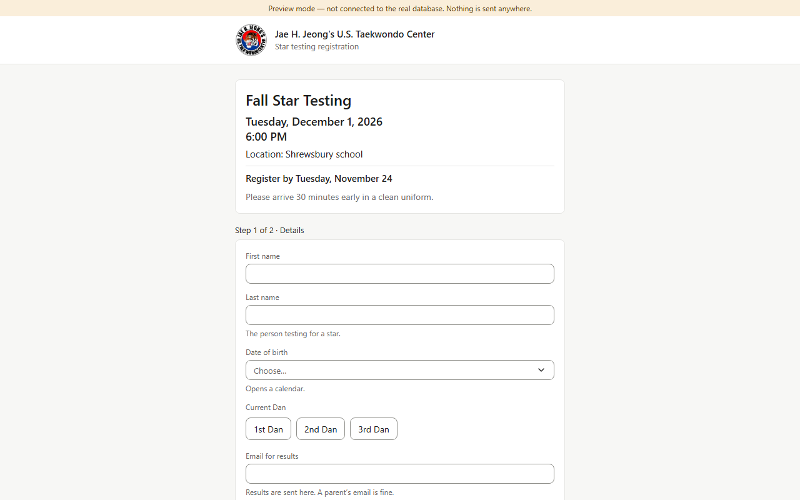
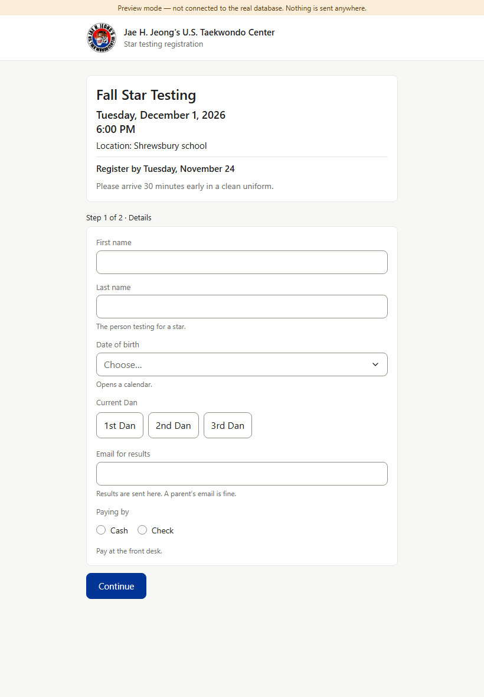
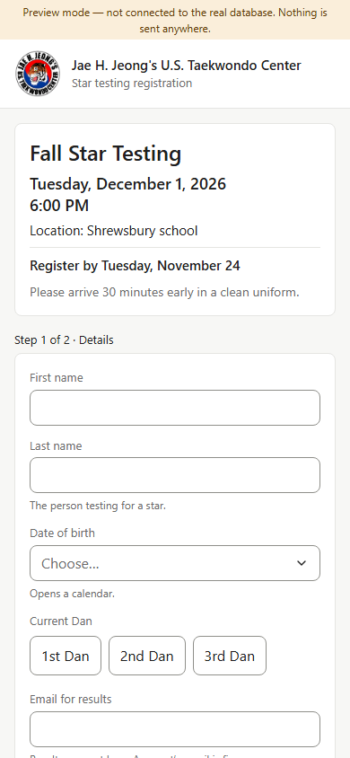
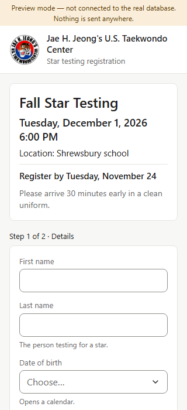
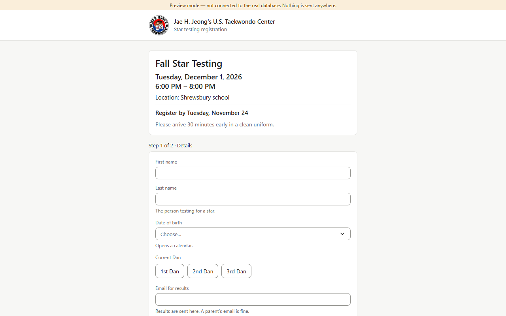
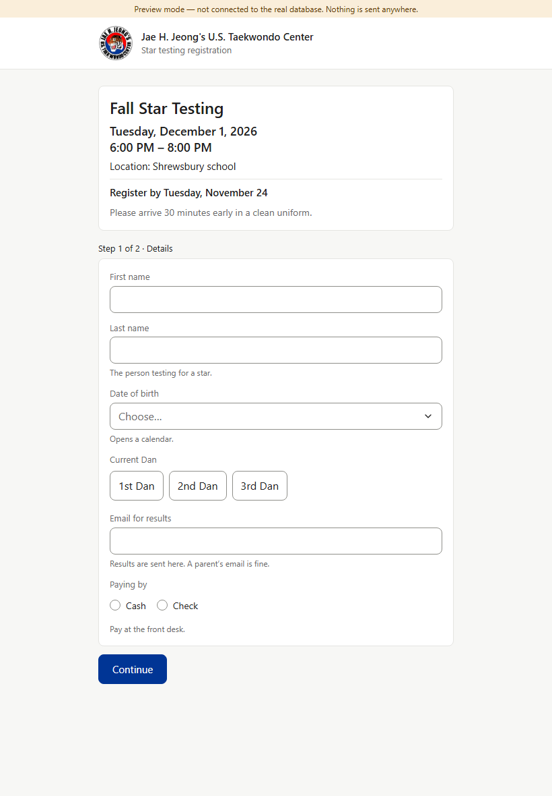
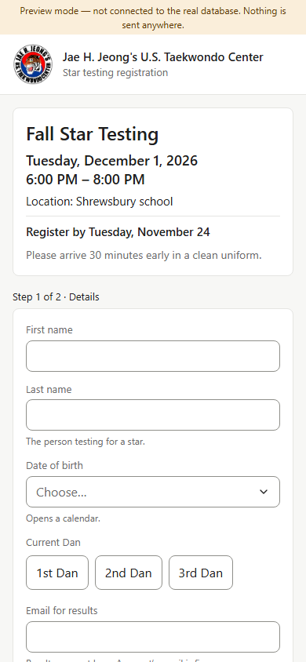
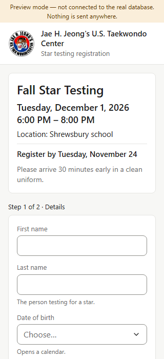

The event box at the top of /star/<code>: the line under the date becomes a range, “6:00 PM – 8:00 PM” (AM/PM on both times, an en dash with spaces). Amber = the line that changes; green = the new line.







